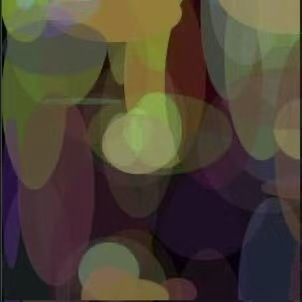
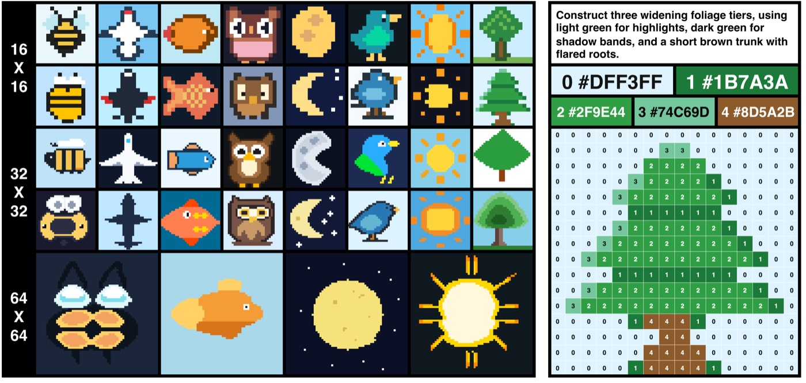
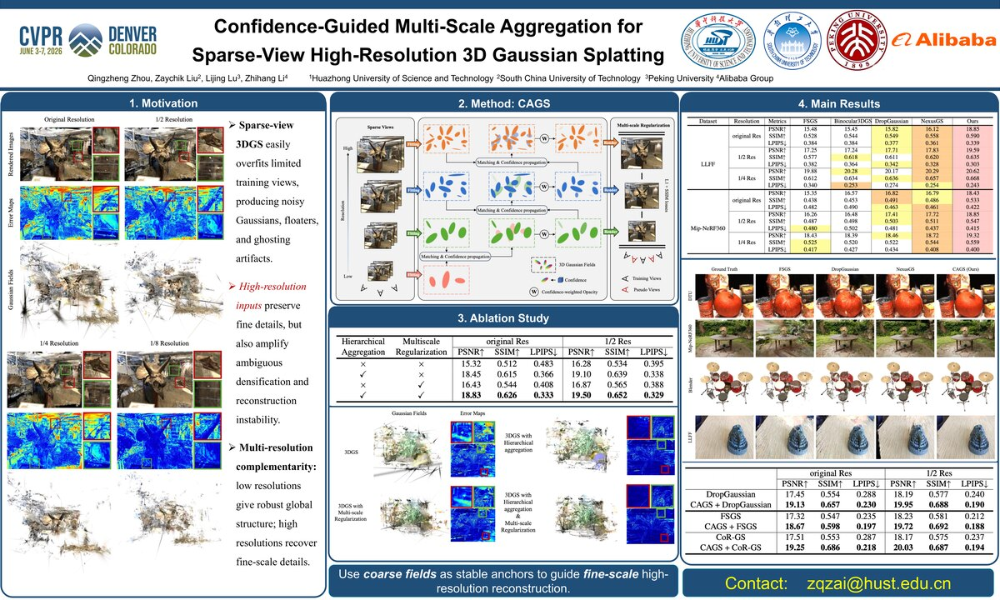
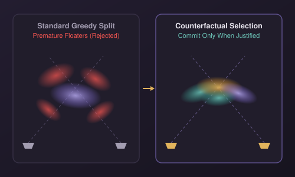

UC Santa Cruz & Gemini Team
2026 – Present

Undergraduate researcher · South China University of Technology
I study Intelligent Science and Technology at South China University of Technology (graduating June 2027) and was a visiting student at UC Berkeley in 2024–2025.
My research focuses on building scalable, language-centric multimodal foundation models—studying how representations, model architectures, and pretraining/post-training recipes unify visual understanding, generation, and reasoning.
I previously worked on 3D vision and computer graphics for building spatial-aware visual intelligence.
Currently, my research centers on two directions:
I am applying for Fall 2027 M.Phil. / Master's programs and actively seeking research internship opportunities in industry—feel free to reach out for internships or research collaborations.

2026
Probing LLMs as general visual generators directly in plain text—without agentic tools, visual tokenizers, or diffusion modules—by representing images as compact symbolic visual primitives (palette-indexed pixel grids), and introducing Pixel Reconstruction Tuning (PRT) to improve downstream multimodal understanding.

CVPR 2026 Highlight
Low input resolution yields stable global geometry while high resolution recovers fine detail at the cost of multi-view noise; confidence-guided coarse-to-fine aggregation across resolutions preserves both.

Under review (Phase 2), AAAI 2027
Counterfactual topology selection commits Gaussian densification and pruning updates only when justified by multi-view consistency, preventing premature topological lock-in and floaters under sparse views.
In the spirit of systematic empirical studies by Shengbang Tong, Junlin Han, and Penghao Wu (e.g., Towards Physics of Multimodal Pretraining, Beyond Language Modeling, Uncovering Understanding–Generation Synergy, Learning to See Before Seeing), we conduct a controlled, end-to-end study of unified language modeling, visual understanding, and image generation (e.g., Qwen3 + latent flow matching)—with a heavy emphasis on large-scale unified pretraining alongside post-training, ablating visual representations, architecture/MoT routing, data mixtures, multi-stage training recipes, and how pretraining signals predict post-training outcomes. Built and optimized a modular JAX/Flax pretraining, post-training, and decontaminated evaluation stack across hundreds of TPU v5p/v6e chips (multi-host/multi-slice sharding, ZeRO-1, rematerialization, elastic recovery, XLA profiling).
Investigating whether modern LLMs can directly replace specialist and generative vision models on standard computer vision tasks—in contrast to approaches that repurpose image or video generators for visual perception such as Vision Banana (Image Generators are Generalist Vision Learners), GenCeption (Video Generation Models are General-Purpose Vision Learners), and SenseNova-Vision (Vision as Unified Multimodal Generation).
2022 – 2027
2024 – 2025
2026 – Present
2026 – Present
2025 – 2026
Language models that draw in pixels and video as plain text, and why symbolic visual data might be a better pretraining signal than images.
Why 3D may disappear from inside the model, only to reappear outside the model as interactive environments, structured states, and control interfaces bridging language agents and the physical world.
Why vision in multimodal understanding behaves almost like another text, why encoder-free and language-centric paradigms are rising, and why visual generators are controllable renderers rather than logical planners.
Do ego and taste still matter for newcomers in AI research, and should one stay in academia or move to industry?
People whose work has shaped mine:
Their work has shaped how I formulate questions, design controlled experiments, and rethink prevailing assumptions—I aspire to create research that is equally rigorous, insightful, and impactful.
You can reach me at a160130k@gmail.com or on WeChat (ZaychikLiu · QR code).